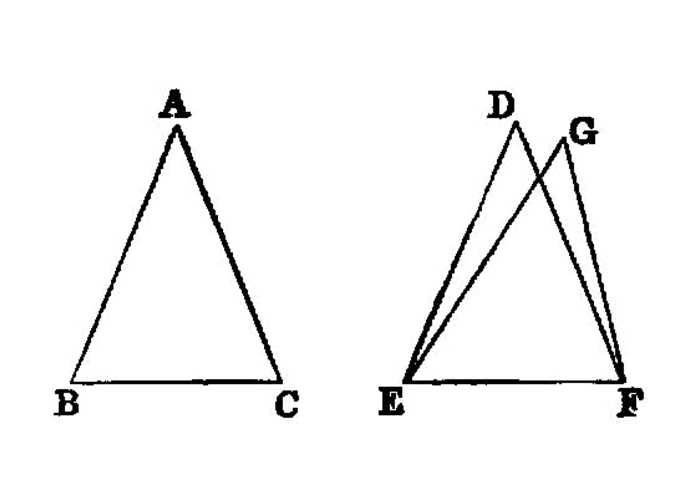

triangles with equal sides have equal angles
{kind=link}

If two triangles have the two sides equal to two sides respectively, and have also the base equal to the base, they will also have the angles equal which are contained by the equal straight lines.
Let ABC, DEF be two triangles having the two sides AB, AC equal to the two sides DE, DF respectively, namely AB to DE, and AC to DF; and let them have the base BC equal to the base EF;
I say that the angle BAC is also equal to the angle EDF.
For, if the triangle ABC be applied to the triangle DEF, and if the point B be placed on the point E and the straight line BC on EF,
the point C will also coincide with F, because BC is equal to EF.
Then, BC coinciding with EF,
BA, AC 1 will also coincide with ED, DF;
for, if the base BC coincides with the base EF, and the sides BA, AC do not coincide with ED, DF but fall beside them 2 as EG, GF,
then, given two straight lines constructed on a straight line (from its extremities) and meeting in a point, there will have been constructed on the same straight line (from its extremities), and on the same side of it, two other straight lines meeting in another point and equal to the former two respectively, namely each to that which has the same extremity with it. But they cannot be so constructed. [I.7]
Therefore it is not possible that, if the base BC be applied to the base EF, the sides BA, AC should not coincide with ED, DF;
they will therefore coincide,
so that the angle BAC will also coincide with the angle EDF, and will be equal to it.
If therefore etc.
references
[I.7]: /elem.1.7 “Book 1 - Proposition 7”